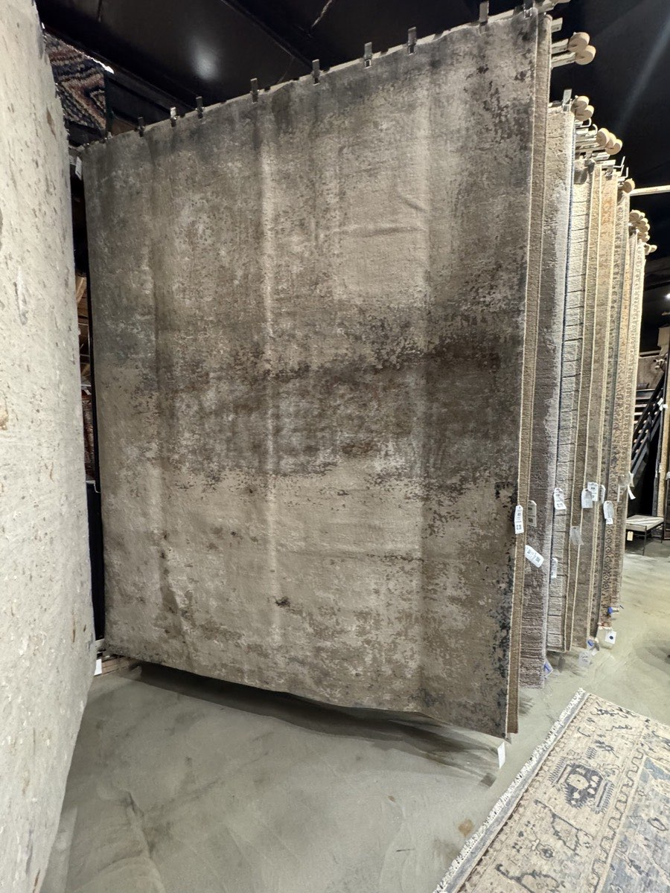

I diagnosed myself last month, not with anything a lab would confirm, but with FOBO, the Fear of Better Options.
If you haven’t met the term, it’s the greedier cousin of FOMO. The venture capitalist Patrick McGinnis, who coined FOMO back in 2004, coined this one too. Where FOMO worries you’re missing the party, FOBO worries the party three blocks over might be a little better, so you stand on the sidewalk and commit to neither. The writer Francesca Capozzi has a good piece on where it comes from, and her take stuck with me. FOBO isn’t really about having too many choices, it’s about perfectionism. It’s the belief that a flawless option is out there, that settling for anything less is a failure, and that if you just keep looking, you’ll turn it up eventually.
Which brings me to my rugs.
I needed one, eight by ten, for a room that had gone bare. It was not a mortgage or a hire or a decision anyone would ever remember, and that should have made it easy. Instead I brought sixteen rugs home and returned fifteen of them.
I lived with each one for a few days, decided the next might be better, and started over, sixteen times over. They came from enough different stores and vendors that I probably dodged a BOLO flyer in a break room somewhere, my face captioned “returns everything.” One rug survived, the other fifteen went back, and all I earned for the effort was the sneaking suspicion that the problem wasn’t the rugs.
The problem was never a shortage of options.

I’ve never thought of myself as a perfectionist, which is what made this so strange. I’ll blame perimenopause for the timing, since it seems to be renegotiating a few things I’d assumed were settled, and leave it at that. The part that matters is that I’d already watched this exact pattern at work, long before it followed me home.
The three-year associate search
I have a colleague, another hospital owner, who spent three years looking for an associate DVM, and every time I saw them the search was still open.
It wasn’t for lack of options, because plenty of good people applied. My colleague would interview someone, get genuinely excited, and then find the one thing. The candidate’s handshake was a little limp, or they asked about lunch breaks too early, or they pronounced “cephalexin” in a way my colleague found grating, or they liked a sports team that was, and I am quoting here, “a red flag.” Never the same thing twice, and never anything you could say out loud without hearing how thin it sounded.
So the search stayed open, and my colleague kept covering the gap alone. They took almost no time off for three years, because there was no one to hand the keys to, and they ran themselves ragged waiting for a perfect associate while a good one, or four, walked right past.
That’s the FOBO trap. Not laziness, not bad luck. Just a conviction that the flawless hire exists, and that saying yes to a genuinely good one would somehow mean giving up.
Why hiring is where it bites hardest
I don’t think my colleague is unusual. Veterinarians are unusually set up to fall into this, and hiring is where it shows up worst.
Start with the math. There are more open positions than there are doctors to fill them, so a good candidate really is hard to come by, and you would think that scarcity would make owners hire faster. It often does the opposite. When you believe the next good applicant might be months away, every flaw in the one sitting across from you starts to look like a reason to keep searching, just in case, and the rare good candidate becomes the person you overthink instead of the person you hire.
Then there’s the training. We are taught to be perfectionists and rewarded for it, because the whole education points us toward the one detail on the slide that everyone else skated past. That instinct saves patients, but it also turns a job interview into a differential you can’t stop working, where every candidate is just a set of findings you keep poking at until something looks abnormal.
Add the stakes. A bad hire in a five-person practice is not an abstraction, since you feel it at the treatment table every day, in the schedule, in the culture, in the clients who notice. So the fear of getting it wrong runs hot, and a hot fear makes every small flaw look disqualifying.
And finish with the fatigue. Most owners don’t have the time to run a real hiring process, so they fall back on “I’ll know the right one when I see them,” which sounds like wisdom but is actually an open door for FOBO, because a bar you never wrote down is a bar that can rise every time someone gets close to clearing it.
Where else it hides
Once you know the shape of it, you see it beyond hiring too. It shows up in vendors, where the practice limps along on software everyone hates or an anesthesia monitor that’s been threatening to quit for a year, because someone is still comparing options in a spreadsheet. It shows up in your own career, where you stay in a role that doesn’t fit because the next one might not fit either, so why move.
And it shows up in the exam room, which is where it stops being an annoyance and starts costing patients. It looks respectable there, which is the danger, because it wears the white coat of thoroughness. The workup keeps growing because you can’t commit to a plan, so you add one more test to be sure. The recheck in two weeks isn’t really a recheck, it’s a way to avoid deciding today. The referral you float moves the decision to someone else’s desk. Sometimes that caution is exactly right, but often it’s FOBO in a lab coat, and the patient waits while you go looking for a certainty the case was never going to give you.
Fatigue is not the same as indecision
It helps to separate two things that feel identical at six o’clock on a Tuesday.
Decision fatigue is temporary. You’ve made two hundred calls since morning and your brain is out of gas, so the fix is rest, or moving the hard choice to a fresh morning, or not deciding what’s for dinner right after you decided how to handle a septic abdomen. I’ve written about that particular kind of tired before, and it has a different cure than the thing we’re talking about here.
FOBO isn’t fatigue. It’s a low hum of worry that whatever you choose will foreclose something better you haven’t found yet, and rest doesn’t touch it, because it isn’t tired, it’s afraid. Afraid that good enough is the same as failure.
The two need different medicine. Fatigue needs a break. FOBO needs a decision.
What I’ve watched work
I have not fully solved this, since I did just buy sixteen rugs, but I’ve watched enough of it in myself and in other practices to know a few things help.
Name the real stakes. Some choices are reversible and cheap to get slightly wrong, and those are the ones we agonize over most. When the downside is small, the cost of not deciding is almost always bigger than the cost of deciding imperfectly. My colleague’s open position cost them three years of weekends, while any of those good candidates would have cost only a few months of onboarding.
Set the bar before you look, not while you’re looking. Decide what “good enough to hire” actually means, in writing, and then honor it when someone clears it. FOBO thrives when the bar drifts upward every time a real option shows up to meet it.
Give the decision a deadline. A real one, a date after which you choose from what’s in front of you. Options expand to fill whatever time you hand them.
Make peace with good enough. This is the one Capozzi’s piece pushed me on, and it borrows from an old idea in psychology about the good enough parent, the one who meets the need without chasing perfection, and whose kids turn out better for it. A good enough hire, a good enough vendor, or a good enough plan, chosen and committed to, will nearly always beat the perfect one you are still waiting on. Perfect is not a higher standard. It is usually just a nicer word for stuck.
My colleague finally hired someone, not a unicorn, just a good, solid, human associate. Last I heard, they’d taken an actual vacation, the first in three years.
The rug, for the record, is fine, better than fine. I stopped looking, which turned out to be the whole trick.
— Dr. V
The Gray Oak Journal
Dr. V is a veterinarian with over twenty years of clinical and operational leadership experience. She has owned and operated several veterinary hospitals, weathered many shifts in the industry, and served on advisory councils. She writes The Gray Oak Journal at grayoakjournal.com.